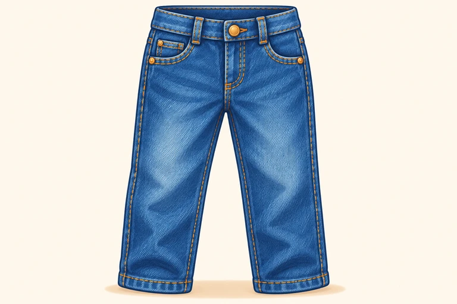
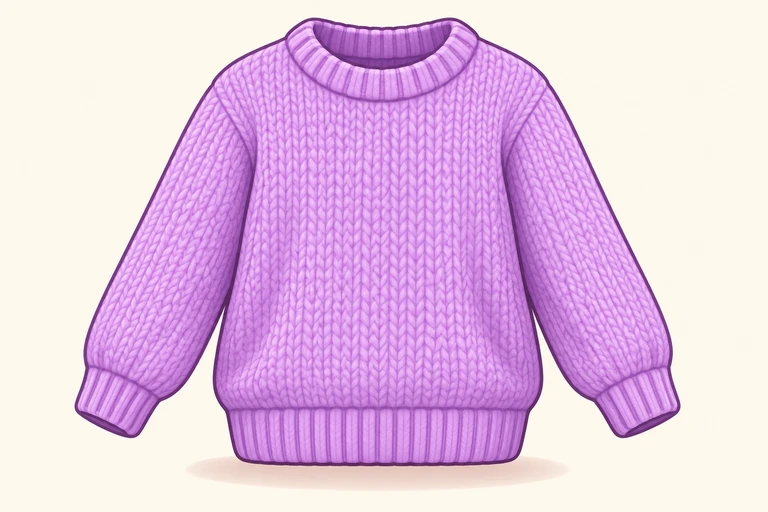

spring
mùa xuân
SPRING
It is spring.
Chưa đánh dấu
Unit 16 · Học trước, thử nhớ rồi luyện đề
Học mùa, thời tiết và trang phục: nghe, nghe chậm, ABC và hội thoại theo thẻ.
Unit 16 có âm thanh đi kèm (giọng máy Anh Mỹ). Em có thể nghe dù máy chưa cài giọng Anh. Nếu lỗi mạng, bấm nghe lại hoặc chọn giọng thiết bị nếu có.
Bấm Nghe khi em sẵn sàng. Trang không tự phát âm thanh.
Nghe cả từ/cụm, đọc theo rồi dùng ABC để nhớ cách viết. ABC đọc tên chữ cái, không phải bài luyện âm. Với cụm nhiều từ, các nhóm chữ được tách riêng.
Chưa có từ cần ôn. Em chọn một nhóm rồi bấm “Cần ôn lại” ở từ muốn luyện thêm nhé.
mùa xuân
It is spring.
Chưa đánh dấu
mùa hè
It is summer.
Chưa đánh dấu
mùa thu
It is autumn.
Chưa đánh dấu
mùa đông
It is winter.
Chưa đánh dấu

áo kiểu
I wear a blouse.
Chưa đánh dấu

quần dài
I wear trousers.
Chưa đánh dấu

quần bò
I wear jeans.
Chưa đánh dấu

áo len chui đầu
I wear a jumper.
Chưa đánh dấu
ấm
The weather is warm.
Chưa đánh dấu
nóng
The weather is hot.
Chưa đánh dấu
mát
The weather is cool.
Chưa đánh dấu
lạnh
The weather is cold.
Chưa đánh dấu
có nắng
The weather is sunny.
Chưa đánh dấu
có mưa
The weather is rainy.
Chưa đánh dấu
có mây
The weather is cloudy.
Chưa đánh dấu
khô
The weather is dry.
Chưa đánh dấu
ẩm
The weather is humid.
Chưa đánh dấu
có gió
The weather is windy.
Chưa đánh dấu
có tuyết
The weather is snowy.
Chưa đánh dấu
mùa khô
There is a dry season in the south of Viet Nam.
Chưa đánh dấu
Nghe hội thoại rồi đọc theo. “Đến lượt em” chỉ đọc A để em nói câu trả lời của B.
A: What season is it?
B: It is spring.
Không suy mùa từ tháng nếu không biết địa điểm.
A: Is it autumn?
B: Yes, it is.
Câu hỏi Yes/No thường lên giọng.
A: What do you usually wear in winter?
B: I wear a jumper.
Đây là lựa chọn của người nói, không phải quy tắc cho mọi người.
A: What do you usually wear in summer?
B: I wear trousers.
Trousers và jeans số nhiều, không dùng a.
A: How is the weather in Ha Noi in spring?
B: It is warm and rainy.
Thông tin trong thẻ bài tập; không phải dự báo.
A: How is the weather in autumn?
B: It is cool and cloudy.
Câu kể trong Lesson 3 xuống giọng cuối câu; ABC chỉ là tên chữ cái.
Ví dụ tự soạn. Vị trí và sở thích là giả định theo từng ví dụ. Trang không thu âm hoặc tự chấm giọng của em.
Mỗi nhóm có bốn bài nhỏ, không giới hạn thời gian. Em được sửa rồi thử lại. Câu trả lời tự lưu để quay lại làm tiếp.